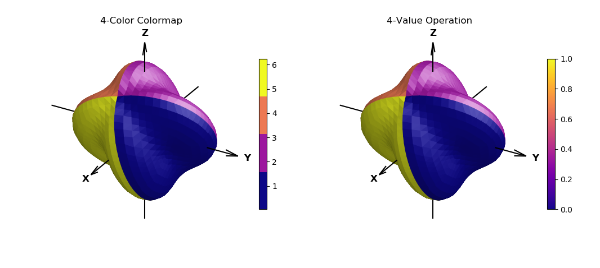

Segmented Cmap Operation¶
This example demonstrates two methods of appling identical surface coloring. The only difference is the resulting colorbar reference.
Colors were selected from a Matplotlib sequential colormap, ‘plasma’. This provided selecting colors which are visualy different in lightness, L*, which are perceived differently using gray scale printing.
import numpy as np
import matplotlib.pyplot as plt
from matplotlib import cm
from matplotlib.colors import ListedColormap
import s3dlib.surface as s3d
#.. Segmented Cmap Operation
# # 1. Define functions to examine ....................................
fourColors = cm.get_cmap('plasma')(np.linspace(0, 1, 4))
fourColor_cmap = ListedColormap(fourColors)
def fourValue_op(rtp) :
r,t,p = rtp
value = np.linspace(0, 1, 4)
H = value[0]
H = np.where(t>0.5*np.pi,value[1], H)
H = np.where(t>1.0*np.pi,value[2], H)
H = np.where(t>1.5*np.pi,value[3], H)
V = np.full(len(r),H)
return V
# ...................
def deflate(rtp) :
r,t,p = rtp
scale = 0.2
Rz = np.cos(p)
Rxys = (1-scale)*np.sin(p) + scale*np.cos(4*t)
R = np.sqrt( Rz**2 + Rxys**2)
return R,t,p
# 2. Setup and mapsurfaces .........................................
rez = 4
illum = [0,1,1]
surf_1 = s3d.SphericalSurface(rez,basetype='octa')
surf_1.map_cmap_from_op(lambda rtp : rtp[1], fourColor_cmap)
surf_2 = s3d.SphericalSurface(rez,basetype='octa')
surf_2.map_cmap_from_op(fourValue_op , 'plasma' )
surf_1.map_geom_from_op(deflate)
surf_1.transform(s3d.eulerRot(-10,35,25,useXconv=False))
surf_1.shade(.3,illum).hilite(.7,illum)
surf_2.map_geom_from_op(deflate)
surf_2.transform(s3d.eulerRot(-10,35,25,useXconv=False))
surf_2.shade(.3,illum).hilite(.7,illum)
# 3. Construct figure, addsurfaces, and plot ......................
fig = plt.figure(figsize=plt.figaspect(0.45))
ax1 = fig.add_subplot(121, projection='3d')
ax2 = fig.add_subplot(122, projection='3d')
ax1.set(xlim=(-1,1), ylim=(-1,1), zlim=(-1,1))
ax2.set(xlim=(-1,1), ylim=(-1,1), zlim=(-1,1))
s3d.standardAxis( ax1, offset=1.0 )
s3d.standardAxis( ax2, offset=1.0 )
plt.colorbar(surf_1.cBar_ScalarMappable, ax=ax1, shrink=0.6, pad=-.05 )
plt.colorbar(surf_2.cBar_ScalarMappable, ax=ax2, shrink=0.6, pad=-.05 )
ax1.set_title('4-Color Colormap')
ax2.set_title('4-Value Operation')
ax1.add_collection3d(surf_1)
ax2.add_collection3d(surf_2)
fig.tight_layout()
plt.show()